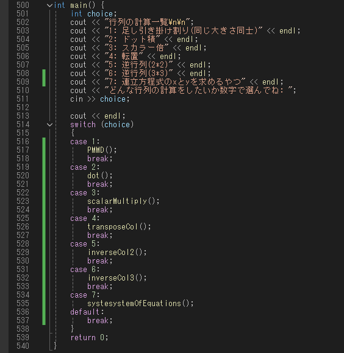

日々プログラミングの進捗を更新しています。
目次
ゲーム制作実績へ移動プログラミングブログへ移動
ゲーム制作活動について
過去のプロジェクトについて紹介します。
過去の作品を一気見！
これらのプロジェクトは
全てUnityとC#を用いて制作
してあります。1番目のMETROID(ライク)は授業で制作＋自分で機能を追加したものとなります。
2024年5月に制作済みの作品です。初めてのゲーム制作ということもあり、関数などの使い方を手探りで作っていました。
2番目のゲームはランゲームです。２週間で制作するという課題で制作したものになります
2024年9月に作ったものになります。3番目のゲームは現在(2024年11月現在)の製作途中のゲームです。
9つの柱を集めてクリアを目指す3Dプラットフォームアクションゲームとなっております。4番目のゲームはいわゆる登山ゲームです。
2024年7月に制作済みの作品です。(動画の関係上時系列がずれています)キャラを自由に動かせる爽快感や、様々なギミックを用意してあります。
プログラミングブログ
このセクションでは日々学んでいるプログラミング技術についてまとめています。
復習もかねて書いているのでよろしくお願いします。C++編
1.入出力編2.演算編
3.関数編
4.ポインタ編
5.配列編
6.文字列編
7.構造体編
8.クラス編
9.継承編
10.行列編
入出力編
この章では主な入出力についてまとめてあります。早速ですが<iostream>を使って出力を行ってみようと思います。
下の呪文(コード)を書いて『CTRL』+『F5』を同時押しで実行してみてください。
もしくはローカル Windowsデバッガーと書いてあるところをクリックしてね。
どうでしょうか！といわれてもピンとこないですよね。
ということで1行ずつ解説していきます。
1行目
#includeというのはC++が勝手に用意してくれている関数を使えるようにする魔法です！
というのも、プログラムで標準ライブラリというものを用いるためにヘッダーファイルを読み込んでいるんですね。
今回は<iostream>というファイルを読み込んでいます。
このファイルはstd::系の中でも入出力系を得意としています。
2行目
見やすいように改行してるだけです！なくてもいいけど読みやすいでしょ？
3行目
int main()ってなんだ！と思ったそこのあなた！
この英語をたったの2単語書くだけでなんとその中に書いた命令をすべて受け取ってくれます！
便利ですね！.....その()とかはなんだって？
この()は今は気にしないでください。気になる人は中にvoidって書いてカッコよくしといてください(？)
詳しくは関数編で話すつもりなのでそちらへ飛んでください。
4行目
さて、謎の{}の時間ですね。
基本的にはこの中に書かないと「俺は無視するけど」といった感じでエラーが出ます。
int main(){この中に命令したいことを書く}といったフォーマットですね
5行目
ようやく待ちに待った命令の内容です。
std::cout<<とすると、その先にある文字列をコンソール(起動した際になんか出るやつ)に出してくれます
今回は"Hello World!"と出力されましたね。
...おっと？￥nはどこへいった？と気づいたあなた、鋭いです。
￥nはC++で改行を意味します。
環境によっては＼nとでるかもしれないですが、同じ意味です。
最後に}で締めくくって終わりです！お疲れさまでした！
出力編(std::cout)...完
演算編
関数編
ポインタ編
配列編
文字列編
構造体編
クラス編
継承編
行列編
この章では、独自に作った簡単な行列計算システムについて解説しています。今回は7つの機能を作ってみました。
メイン関数

ユーザーからの入力によって何を実行するのか決めています。